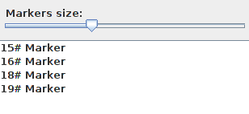

After placing marker on the picture you can change it's values or completely remove it
For editing marker select tool Edit Marker:

Then just simply click on the marker on the screen which you want to edit.
For removing marker select tool Remove Marker:
Then click on the marker you want to remove.
You can highlight marker by selecting it in the list of markers:
Are those markers too big? Adjust size of markers yourself by using Markers size slider.